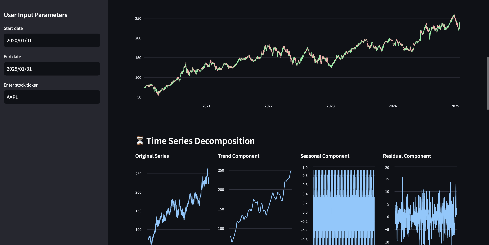

Project Overview
This project is a dynamic and interactive Stock Price Forecasting Dashboard built using Streamlit, yFinance, Plotly, and Prophet. It provides users with the ability to visualize historical stock prices, analyze seasonal trends, and forecast future stock price movements using advanced time-series modeling.
Key Features
- Interactive stock price visualization.
- Time series decomposition to explore trends, seasonality, and residuals.
- Price forecasting allowing forecasts for up to 365 days.
- Flexible date and stock ticker selection for customized analysis.
Dashboard

About
- For a detailed look at the full project and its source code, please visit the GitHub repository.
- I welcome professional connections and discussions about this project or related topics. Feel free to connect with me on LinkedIn.
- To learn more about my other projects and professional background, you can visit my personal website.